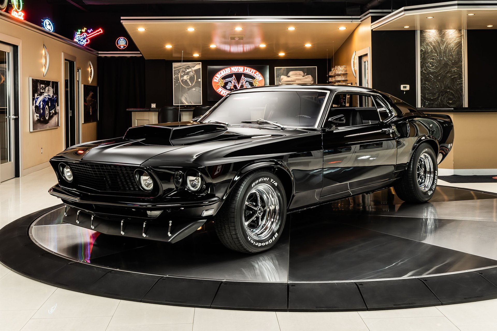

ფორდ მოტორ კომპანი (ინგლ. Ford Motor Company), კომპანია „ფორდი“ — ამერიკული მულტინაციონალური კორპორაცია და მსოფლიოს სიდიდით მეხუთე ავტომწარმოებელი ტოიოტას, ჯენერალ მოტორსის, ფოლკსვაგენისა და ჰიუნდაის შემდეგ მსოფლიოს მასშტაბით ავტომანქანების გაყიდვებით (2010 წლის მონაცემებით). 2010 წელს ფორდი რანგით მეორე ავტომწარმოებელი იყო აშშ-ში ჯენერალ მოტორსის შემდეგ და მეოთხე ევროპაში იგივე მაჩვენებელში. ფორდი ასევე რანგით მე-8 ამერიკული კომპანია იყო 2010 წელს ფორჩუნ-500 სიაში, გლობალური შემოსავლების მიხედვით (128.954 მილიარდი დოლარი). 2010 წელს ფორდმა გამოუშვა 4,8 მილიონი ავტომანქანა და დასაქმებული ჰყავდა 164,000 ადამიანი დაახლოებით 90 ქარხანაში და დაწესებულებაში მსოფლიოს მრავალ ქვეყანაში.